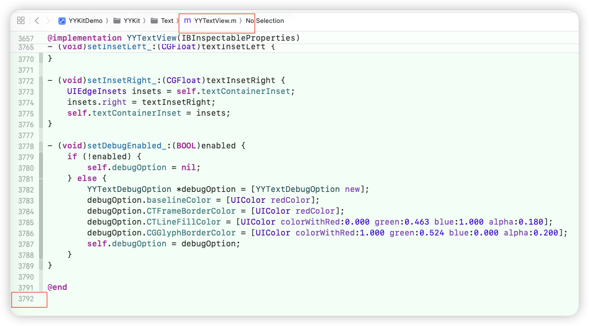
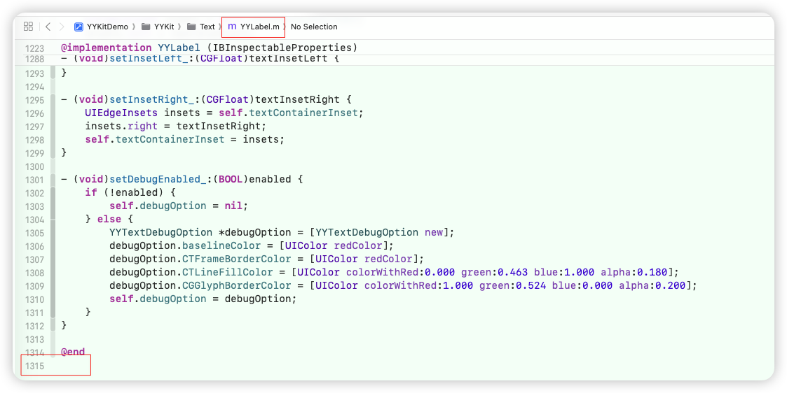

Table of Contents
一、基本面
1、历史
- 更新时间跨度： 2013.4.11~2017.8.6
- 历史贡献者
@ibireme：郭曜源（作者，绝对贡献者）@JakeLin@skyline75489@KayWong@stevemoser@yas375@wintersone@windfringe@markrookie@evianzhow
- 框架所覆盖的iOS版本号：iOS 6 ～ iOS 10 截止2025.12.6 iOS版本为26.1
2、目录结构
-
关于系统底层的语法糖的封装：/Base
-
关于自建小工具集
-
YYReachability
- 网络状态监听工具类：当前网络是否可达、Wi-Fi 还是蜂窝、网络变化给予回调
- 对系统**
SCNetworkReachability**进行二次封装
-
YYGestureRecognizer
- 绕过@selector和Target，只关心加载的视图对象，以及响应方法。其中利用Block避免了代码的割裂
-
YYFileHash（不是加密库）
- 给文件算各种哈希值（摘要）：用系统底层的加密库（CommonCrypto 等）算出：MD5 / SHA1 / SHA256 / SHA512
-
YYKeychain
- 对 iOS Keychain 的轻量封装
- 只是封装访问接口，不会同步云服务器数据
-
YYWeakProxy（在Swift语言上，没有代理类
NSProxy）@interface YYWeakProxy : NSProxy- 本质上是一个弱引用的消息转发中间人，典型用途：给 NSTimer / CADisplayLink / GCD timer 等保命，防止循环引用导致控制器不释放
-
YYTimer（有部分争议）
- GCD + block 版 NSTimer
- 用Block绕过@selector，避免了代码的割裂
-
YYTransaction 一般开发用不到，主要用于构建基础框架
- RunLoop 事务调度器，在本轮 RunLoop 结束前，把一堆重复任务合并成一次执行
- 轻量版的
CATransaction+dispatch_once_per_runloop
-
YYAsyncLayer 一般开发用不到，主要用于构建基础框架
-
一个支持异步绘制的 CALayer 子类，用来把复杂的绘制丢到后台线程做，最后再一次性把结果贴到 layer 上
-
普通
UILabel/ 自定义drawRect:：所有绘制都在主线程，文本复杂、图片多、富文本 layout 重时，一滑 tableView 就卡 -
核心角色
-
YYAsyncLayer（
@interface YYAsyncLayer : CALayer）挂在某个 UIView 上（比如 YYLabel）
有个开关
displaysAsynchronously控制是否异步绘制重写
display/setNeedsDisplay，决定走同步还是异步绘制流程 -
YYAsyncLayerDelegate
一般由宿主
UIView实现（比如 YYLabel 实现这个协议）提供一个方法：
- newAsyncDisplayTask让 layer 去拿“这一轮要怎么画”的任务描述
-
YYAsyncLayerDisplayTask
willDisplay：开始画之前干啥display：真正的绘制逻辑（拿到 CGContext + size + isCancelled 回调）didDisplay：绘完之后通知一下（成功/取消）
-
-
-
YYSentinel 一般开发用不到，主要用于构建基础框架
- 一个原子递增的整型计数器，用来做“版本号 / 取消标记”
- 在 YYAsyncLayer 里，它就是 本次绘制是不是已经过期 的判断依据。
- 轻量版的、线程安全的 int
- 异步网络 + 列表复用：发出去的请求如果 UI 已经滚出/复用，老回调就应该作废
- 异步计算（布局、富文本排版）：新输入来了，旧计算结果全部不要
-
YYDispatchQueuePool 一般开发用不到，主要用于构建基础框架
- 统一管理的，按优先级划分的 GCD 串行队列线程池。不要随便new，从线程池中拿
- 按优先级分组：High / Default / Low / Background 等
- 池内有多条队列：均匀分配任务到不同 queue，利用多核
-
YYThreadSafeArray （有坑，不完美）
- 带锁的 NSMutableArray 子类，用来在多线程下“相对安全”地读写数组。
-
YYThreadSafeDictionary
-
-
YYModel ：/Model
- OC的主流的模型转换工具，库中相比其他的同类框架（比如： MJExtension）更为广泛的调用了系统更底层的Api，所以效率得到了提升。在网友反馈的压测报告可见一斑
- 主流OC模型转换工具相关测评
-
YYImage：/Image
- 相关继承关系
@interface YYImage : UIImage <YYAnimatedImage>@interface YYAnimatedImageView : UIImageView
- 不管下载、不管 URL，只负责「这段二进制图像数据如何按最高性价比显示出来」
- 显示 / 编码 / 解码
- 动图：WebP、APNG、GIF
- 静态图：WebP、PNG、GIF、JPEG、JP2、TIFF、BMP、ICO、ICNS
- 支持 baseline / progressive / interlaced 解码（比如渐进式 JPEG 那种一点点变清晰）
- Sprite Sheet 支持：一张大图按 rect 切成多帧播放，适合你后面想做一些「老游戏风格」「自定义动画资源」的时候
- 内部有 动态内存 buffer，根据当前内存情况自动调整「预解码多少帧」，在 性能和内存之间做平衡
- 编码/解码一体：不只是显示图片，还能把图写回 WebP/PNG/JPEG 等格式，用于本地缓存、导出等场景
- 高性能动图播放
- 不会一次把所有帧全解码进内存；
- 会根据播放进度和内存情况，维护一个「前后若干帧」的环形 buffer；
- 尽量避免主线程卡顿和峰值内存暴涨。
- 相关继承关系
-
YYCache：/Cache
- 给 iOS 做「高性能、本地可持久化的键值缓存」
- 先查内存；
- 内存没有，再查磁盘；
- 磁盘没有，再走网络 / 计算，然后写回
- YYMemoryCache 多维控制粒度
- countLimit：最多多少条记录
- costLimit：总 cost（你自己定义，比如图片字节数）
- ageLimit：每条记录最大的生存时间
- autoTrimInterval：多长时间自动清理一次
- freeDiskSpaceLimit（磁盘）：磁盘空间不足时自动删
- 自定义序列化：磁盘缓存默认走 NSCoding / NSSecureCoding，但是 YYDiskCache 允许你自定义归档/反归档逻辑
- 自己用
NSKeyedArchiver/NSKeyedUnarchiver； - 自己写 JSON <-> Model；
- 只存原始二进制数据等。
- 自己用
- YYCache = YYMemoryCache（内存缓存） + YYDiskCache（磁盘缓存） 的组合包装，做了线程安全、LRU 淘汰、多种上限控制、自动清理、以及磁盘存储策略（SQLite / 文件）的封装
- 实际很多第三方库也支持把 YYCache 拿来当「后端」，比如 SDWebImage 可以直接把 YYCache 绑成默认 imageCache
- 给 iOS 做「高性能、本地可持久化的键值缓存」
-
YYText：/Text
- 对于富文本的处理（用异步渲染的手法，较重）
二、在未来有选择的逐步淘汰YYKit
-
最后一次更新是在2017.8.6，距今已有9年。在这9年期间，手机移动端的硬件和软件层面均发生了很大的变化。YYKit是那个时代的过渡产物
- 硬件层面的跃升，带来了更高的容错率
- 软件层面，系统 的Api不断的丰富以及重构，最有建设性的就是开发语言从OC转移到了Swift，直到目前ABI稳定，乃至到系统底层包括内存优化上，也是做了广泛的压测评估的，这一种升级所带来的工作量以及思维量，远非个人团队能企及。
- 任何代码都有Bug，甚至是适用与之相匹配的业务场景。即便他非常的优秀，甚至在历史进程中发挥了不可忽视，甚至是灯塔的作用，但是不要因为个人能力不足而妄加造神运动，特别是在有大量平替方案的前提下的，仅仅因为使用习惯或者是学习新体系的额外的学习曲线，就固步自封。**因为互联网这个行业就是一直在向前，就是一个逐步的吐故纳新的过程。**十年前我们可以仰视他，十年后最起码能做到可以平视（即，了解源码或者是实现机制）
-
在使用YYKit 为了兼顾使用习惯 + 处理一些Api升级的警告 + 舍弃其中的一些过时的处理方案 ==> 手动集成于我们目前项目上，有选择的使用它的一些库。但是不建议一股脑的代入：
-
建议保留（按需引入）：YYCache
-
建议舍弃（有平替或者语法层面做了规整，不需要额外写轮子）：
- YYText：一般业务没有极致场景，轻量框架能让人耳目一新
- YYImage：
- iOS 14+ 已经原生支持 WebP
- SDWebImage、Kingfisher 这些现代库都已经接好系统的 WebP / HEIF / AVIF 等 coder
- 在Swift项目中如果贸然一股脑引入YYKit多少显得不负责
- YYReachability：有其他工具能完全替代，并且封装成了悬浮小工具，实时监听
- YYGestureRecognizer：手势，最后是加载到UIView层，所以应该在UIView层封装分类更合理。最主要是要绕过@selector和Target，使代码不割裂，更聚焦业务层，而且还需要封装追加，否则下一个block一定会覆盖当前的block。YYGestureRecognizer只是开了个头，未完成极致封装
- YYModel ：在Swift工程中有更好的解决方案。系统帮忙操办：
Codable+JSONDecoder- Alamofire 5 开始对
Codable直接做了适配，你可以让它“顺路”帮你解析成模型
- Alamofire 5 开始对
- YYText：较重、一般场景用不到，几乎很难遇到极致需要的，一般场景使用会造成不必要的开销（开子线程去异步处理）。一般人用YYText的目的仅仅是因为系统富文本的构建方式非常的冗长，需要一个封装好的二级Api。仅此而已
-
有选择的使用（除非大型框架重构/自建）：YYTransaction、YYAsyncLayer、YYSentinel、YYDispatchQueuePool
-
-
目前主流是Swift语言，既然是Swift项目，不到万不得已不要调用OC库。这是一个大原则。因为有些与时俱进的主流库是不断的在拥抱最新的系统Api，而且最近3个月内也在推更新。YYKit是OC库
-
YYTransaction、YYAsyncLayer、YYSentinel、YYDispatchQueuePool 主要用于构建基础框架。一般业务用不到，一般的开发人员也不太会流利使用
-
YYKit 关于富文本的处理，比较重，适用于非常极端情况（即，整页数据都是富文本需要异步渲染，否则会出现卡顿的情况）
- 富文本与普通文本的区别：富文本仅仅把普通文本的各项配置，做成了一个数据束，传参进框架进行处理
- 只要不是官方SDK层面的调整，我们对官方Api的各种封装调用，本质上还是对官方Api的封装调用
- 对于富文本的痛点，对于开发人员，只需要面对，对一段特定的字符串有何种行为（颜色、字体、下划线、下划线颜色、点击事件）
- 我们一般对于富文本的处理，即便是轻量级的框架，全部是针对TextKit。而一般的系统UIKit框架，比如
UILabel、UITextView、UITextfield对于UI的绘制全部是在主线程上使用系统的TextKit，如果在非常极端情况下，是需要对此进行优化的。YYKit 关于富文本的处理，是完全绕过系统UILabel/UITextView的管线（没有处理UITextfield富文本的情况），自己接管 TextKit + 支持异步绘制的富文本引擎 - 如果一般的场景就用此渲染，无意是会造成冗余的系统开销。而极端场景非常少见（大数据➕高并发➕App主题或者实现的功能需要）
-
如果要在异步绘制UI上面下功夫，那么就需要更进一步的接触或者学习。对全局的UI渲染进入异步渲染，实际上也就是将YYKit 关于富文本的处理的思想扩大到全局，代表性的框架（出品自Facebook）
-
为了接管系统的管线，产生了YYLabel和YYTextView
-
必须继承才可以用，有一定的入侵性
-
代码行数很大，未文件级别的解耦


-
-
YYThreadSafeArray（不完美）
- 性能肯定不如裸
NSMutableArray - 它是简单实现，不是高强度并发容器
- 在90%的业务场景下不需要（鸡肋）。更合理的做法是：数据只在一个“专用队列/线程”上修改，而不是到处加锁硬抗
- 看起来很安全，实际上有不少明显的细节雷
- 快速枚举不安全
- 枚举 block 里操作自己会死锁
- 外部如果理解不清，很容易误用
- 性能肯定不如裸
三、FAQ
1、TextKit
1.1、TextKit 的三大核心类
- TextKit = iOS / macOS 里，系统级的“富文本排版引擎”，负责把字符串 + 属性 → 真实画在屏幕上。
- NSTextStorage
- 本质上是一个可变的
NSAttributedString子类 - 里面存的是：文本 + Attributes（字体/颜色/下划线等）
- 本质上是一个可变的
- NSLayoutManager
- 负责“排版”：
- 把
NSTextStorage里的字符，变成一堆 glyph（字体里的真正图形） - 计算每个 glyph 在容器里的位置
- 管理行/段落/换行等
- 把
- 也负责绘制：
drawGlyphs(forGlyphRange:at:)
- 负责“排版”：
- NSTextContainer
- 描述“文字要排到哪里”：
- 宽高
- 排版路径（可以是矩形、圆形、带洞的路径）
- 一个
NSLayoutManager可绑定多个NSTextContainer（比如同一段文本在多页上显示）
- 描述“文字要排到哪里”：
1.2、常规构建管道
NSTextStorage（文本 + 属性） →NSLayoutManager（排版计算 + glyph）→NSTextContainer（排到哪个区域）→ draw 到屏幕。UILabel/UITextView内部就是维护了一套这样的组合，只是帮忙封装掉了